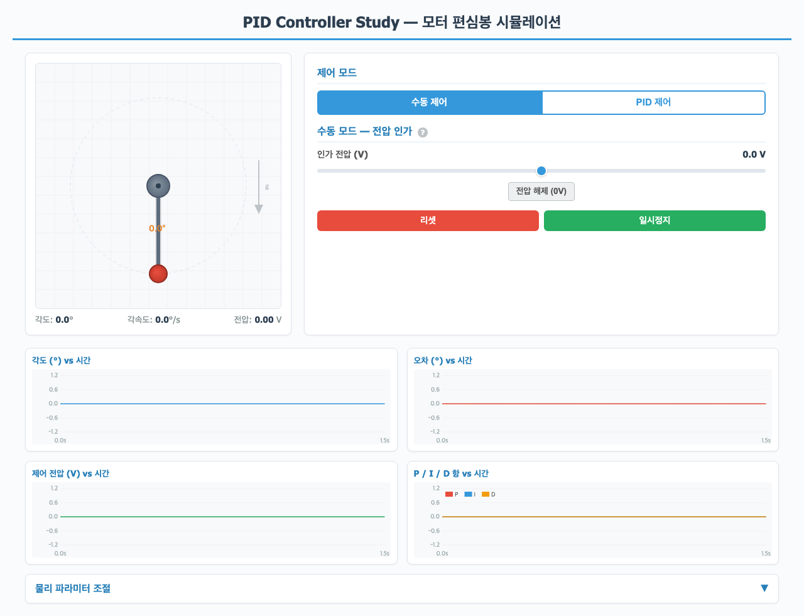
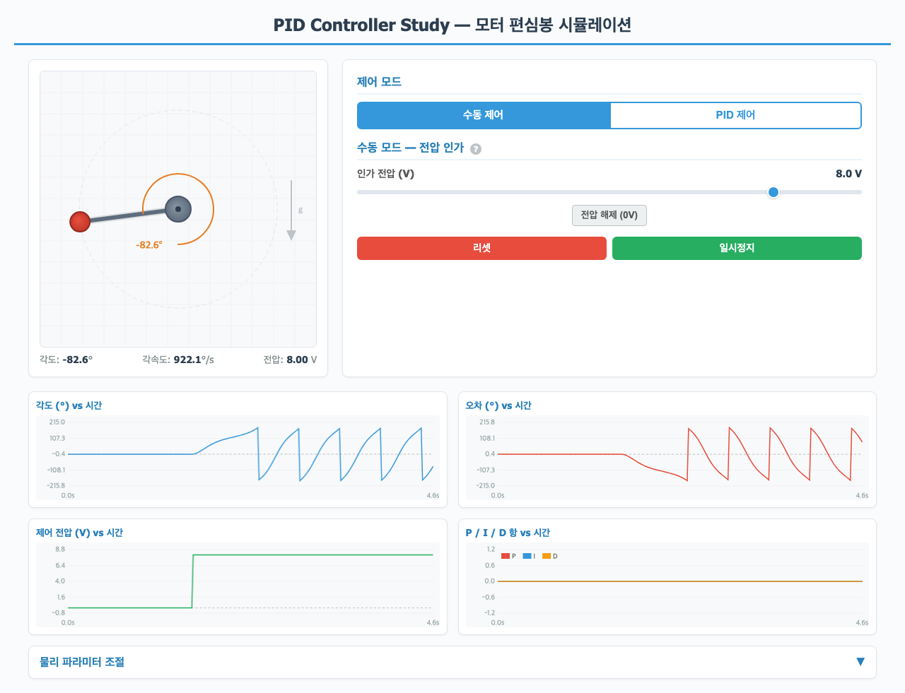
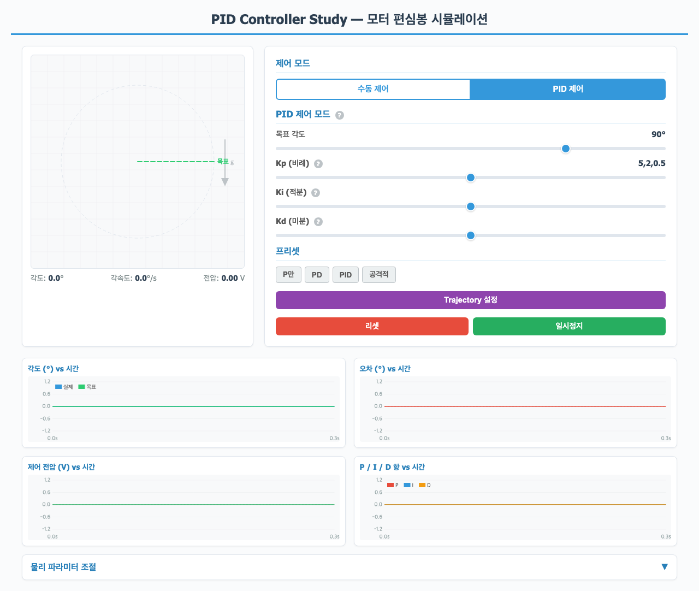
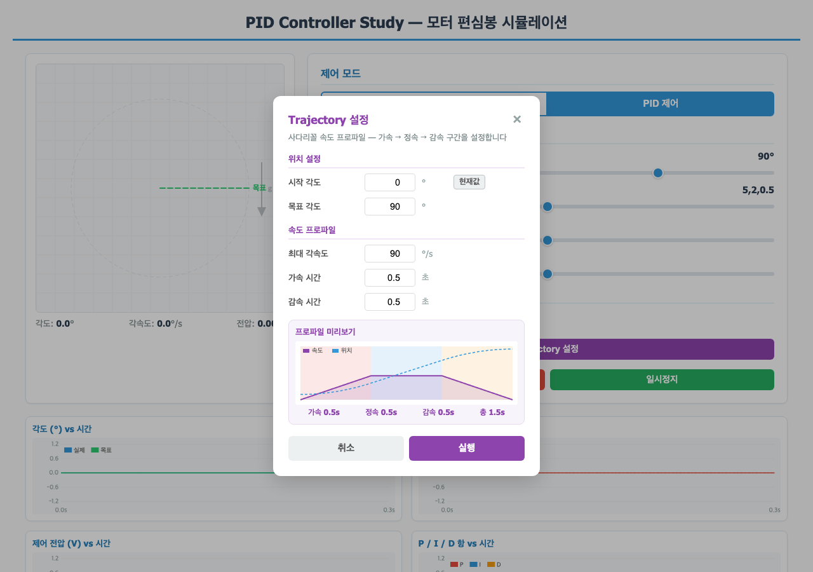
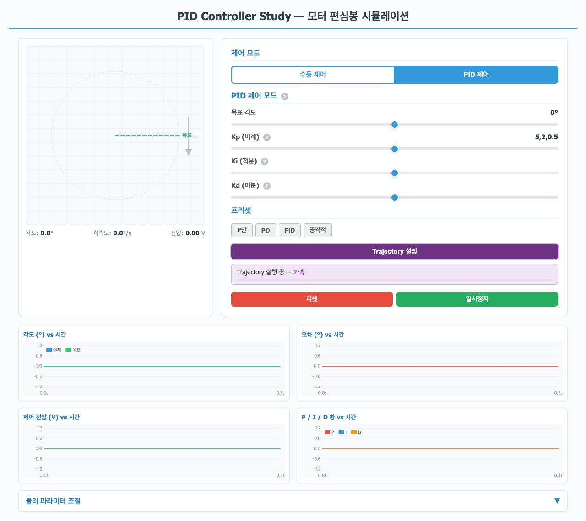
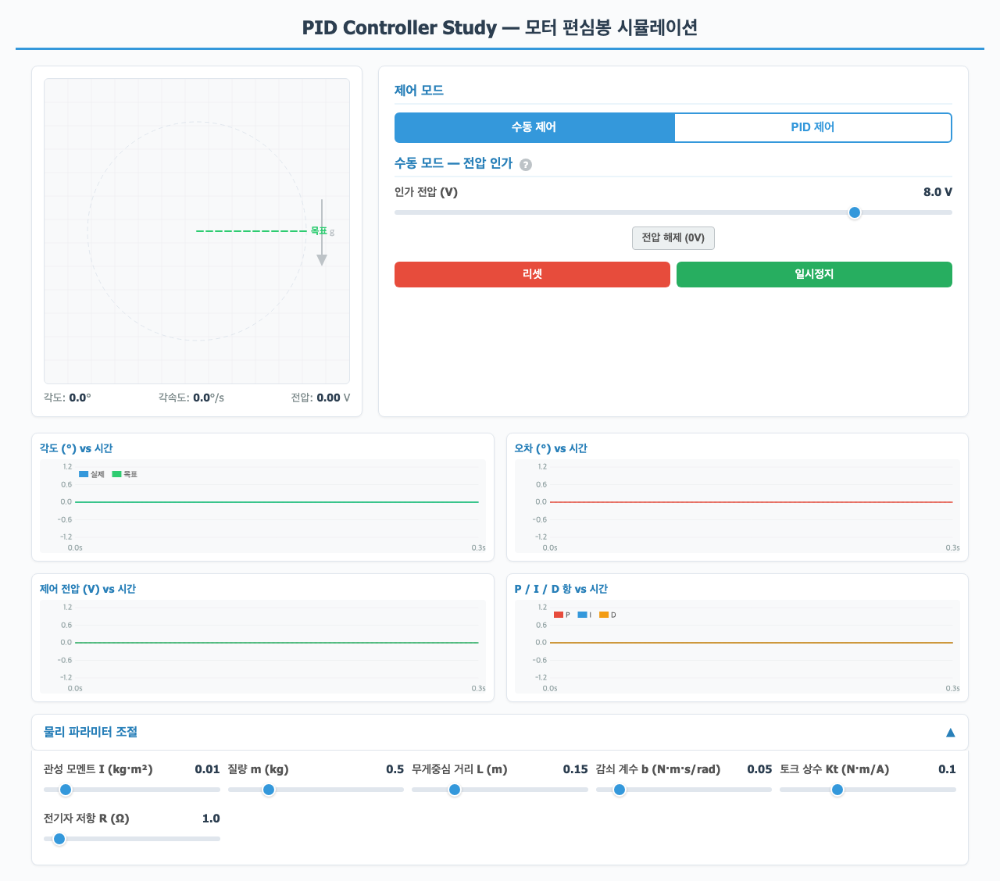

1. 프로젝트 개요 및 코드 구조
1.1 프로젝트 목적
이 프로젝트는 PID 제어기의 원리를 직관적으로 이해하기 위한 교육용 시뮬레이션입니다. DC 모터에 연결된 편심봉(한쪽에 무게가 몰린 봉)을 가상으로 구현하고, 사용자가 직접 전압을 인가하거나 PID 제어기를 적용하여 봉의 각도를 제어하는 과정을 브라우저에서 실시간으로 관찰할 수 있습니다.
1.2 기술 스택
| 구성 요소 | 기술 | 역할 |
|---|---|---|
| 서버 | Python Flask | HTML 파일 서빙 (port 5001) |
| 시뮬레이션 | JavaScript (순수) | 물리 엔진, PID, Trajectory, 60fps 루프 |
| 시각화 | Canvas API | 모터 애니메이션 + 실시간 그래프 4개 |
| 환경 | Conda (study) | Python 3.11, Flask |
1.3 파일 구조
├── app.py # Flask 서버 (HTML 서빙)
├── CLAUDE.md # 프로젝트 규칙
├── PID의_개념.html # 이 문서
├── history.html / .md # 작업 히스토리
└── static/
├── index.html # 시뮬레이션 전체 (HTML+CSS+JS)
└── screenshots/ # 캡처 이미지
1.4 아키텍처 흐름
모든 시뮬레이션 로직은 브라우저의 JavaScript에서 실행됩니다. Flask 서버는 단순히 HTML 파일을 서빙하는 역할만 합니다. 물리 엔진은 프레임당 4번의 sub-step(240Hz)으로 정밀한 시뮬레이션을 수행하고, Canvas 렌더링은 60fps로 부드러운 애니메이션을 제공합니다.
2. 시뮬레이션 사용법
2.1 실행 방법
# conda 환경 활성화
conda activate study
# Flask 서버 실행
python app.py
# 브라우저에서 접속
# http://localhost:50012.2 초기 화면 — 수동 모드

화면은 크게 4가지 영역으로 구성됩니다:
- Canvas 패널 (좌측): 모터 허브(회색)와 편심봉(막대 + 빨간 추)의 실시간 애니메이션
- 컨트롤 패널 (우측): 모드 선택, 슬라이더, 프리셋 버튼
- 실시간 그래프 (하단): 각도, 오차, 전압, P/I/D 항 4개 그래프
- 물리 파라미터 (최하단): 접기/펼치기 가능한 상세 파라미터 조절 패널
2.3 수동 모드 — 전압 인가

수동 모드에서는 전압 슬라이더를 통해 모터에 직접 전압(-12V ~ +12V)을 인가합니다. 양(+) 전압은 반시계 방향, 음(-) 전압은 시계 방향으로 모터를 회전시킵니다. 전압을 0으로 돌리면 중력과 감쇠에 의해 봉이 자연스럽게 진동하다 아래쪽으로 돌아옵니다.
2.4 PID 모드

PID 모드에서는:
- 목표 각도 슬라이더로 원하는 위치를 설정합니다 (-180° ~ +180°)
- Kp, Ki, Kd 슬라이더로 PID 게인을 실시간 조절합니다
- 프리셋 버튼으로 대표적인 튜닝 조합을 빠르게 적용합니다
- 각도 그래프에 실제 각도(파란색)와 목표 각도(초록색)가 함께 표시됩니다
2.5 Trajectory 모드

PID 모드에서 "Trajectory 설정" 버튼을 클릭하면 플로팅 윈도우가 열립니다:
- 시작/목표 각도: 이동의 시작점과 끝점 (°)
- 최대 각속도: 정속 구간의 속도 (°/s)
- 가속/감속 시간: 각 구간의 지속 시간 (초)
- 프로파일 미리보기: 속도(보라)와 위치(파란 점선)를 실시간으로 확인

2.6 물리 파라미터 조절

하단의 "물리 파라미터 조절" 패널을 펼치면 다음을 조절할 수 있습니다:
| 파라미터 | 기호 | 기본값 | 의미 |
|---|---|---|---|
| 관성 모멘트 | I | 0.01 kg·m² | 봉의 회전 저항 (클수록 무거움) |
| 질량 | m | 0.5 kg | 추의 질량 (중력 토크에 영향) |
| 무게중심 거리 | L | 0.15 m | 회전축~추 사이 거리 |
| 감쇠 계수 | b | 0.05 | 마찰/저항 (클수록 빨리 정지) |
| 토크 상수 | Kt | 0.1 N·m/A | 전류→토크 변환 효율 |
| 전기자 저항 | R | 1.0 Ω | 모터 내부 저항 |
3. 물리 모델 — 모터와 편심봉
3.1 시스템 구성
이 시뮬레이션의 물리 시스템은 DC 모터에 연결된 편심봉(구동 진자, driven pendulum)입니다.
3.2 운동 방정식
시스템에 작용하는 3가지 토크를 고려합니다:
(1) 모터 토크
DC 모터에 전압 V를 인가하면 전류가 흐르고, 전류에 비례하는 토크가 발생합니다. 역기전력(Back-EMF)이 회전 속도에 비례하므로:
- Kt = 토크 상수: 전류 1A당 발생하는 토크
- Ke = 역기전력 상수: 각속도 1 rad/s당 발생하는 역기전력
- V = 인가 전압, ω = 각속도, R = 전기자 저항
(2) 중력 토크
봉의 무게중심이 회전축에서 Lcm 떨어져 있으므로, sin(θ)에 비례하는 중력 토크가 발생합니다. θ=0(아래)에서는 0이고, θ=±90°에서 최대가 됩니다.
(3) 감쇠 토크
마찰과 공기저항을 모델링하는 점성 감쇠 항으로, 각속도에 비례하여 운동을 억제합니다.
통합 운동 방정식
이를 풀어 쓰면:
여기서 α는 각가속도(dω/dt)입니다. 이 미분 방정식을 RK4 방법으로 수치적으로 풀어나갑니다.
3.3 코드 구현
function computeAccel(th, om, V) {
const tauMotor = phys.Kt * (V - phys.Ke * om) / phys.R; // 모터 토크
const tauGravity = phys.m * phys.g * phys.Lcm * Math.sin(th); // 중력 토크
const tauDamping = phys.b * om; // 감쇠 토크
return (tauMotor - tauGravity - tauDamping) / phys.I; // 각가속도
}4. 수치 적분 — RK4 방법
4.1 수치해석(Numerical Analysis)이란?
물리 시뮬레이션의 핵심 문제는 미분방정식(ODE)을 푸는 것입니다. 우리의 모터 시스템은 다음과 같은 ODE로 표현됩니다:
"풀다"란, 시간 t가 주어졌을 때 θ(t)와 ω(t)의 값을 구하는 것입니다. 그런데 f에 sinθ가 들어있어 해석적(닫힌 형태) 풀이가 불가능합니다.
수치해석: 연속적인 해를 이산적인 점들로 근사. dt가 작을수록 실제 해에 가까워집니다.
수치해석에서 가장 중요한 두 가지 질문:
- 정확도(Accuracy) — 근사값이 실제 해에 얼마나 가까운가?
- 안정성(Stability) — 시간이 지나도 오차가 폭발하지 않는가?
4.2 ODE를 코드로 표현하기
먼저 우리의 물리 시스템이 코드에서 어떻게 ODE로 표현되는지 봅시다.
computeAccel()은 현재 상태 (θ, ω)와 입력(V)이 주어졌을 때
"이 순간의 변화율(기울기)"을 반환합니다. 이것이 ODE의 우변 f(θ, ω, V)입니다.
- 상태: 현재의 [θ, ω] → "지금 봉이 어디에 있고, 얼마나 빠른가?"
- 변화율: [dθ/dt, dω/dt] = [ω, computeAccel()] → "지금 이 순간 어떻게 변하고 있는가?"
4.3 Euler 방법 — 가장 단순한 수치 적분
수치 적분의 가장 기본적인 형태인 전진 Euler(Forward Euler)를 먼저 이해합시다.
아이디어는 단순합니다: "현재 기울기 방향으로 dt만큼 직진한다."
Euler 방법의 코드 (이 프로젝트에서는 사용하지 않음)
// Euler 방법 — 이해를 위한 참고 코드
function eulerStep(th, om, V, dt) {
// 현재 상태에서 변화율(기울기) 계산
const accel = computeAccel(th, om, V); // dω/dt = 각가속도
const vel = om; // dθ/dt = 각속도
// 현재 기울기 × dt 만큼 "직진"
const newTh = th + dt * vel; // θ 업데이트
const newOm = om + dt * accel; // ω 업데이트
return [newTh, newOm];
}
// 문제: 기울기를 시작점 하나에서만 측정 → 곡선을 따라가지 못함4.4 수치 적분 방법 비교 — 왜 RK4인가?
다양한 수치 적분 방법들의 비교:
| 방법 | 차수 | f() 호출 횟수 | 오차 (per step) | 특징 |
|---|---|---|---|---|
| Forward Euler | 1차 | 1회 | O(dt2) | 단순하지만 불안정, 에너지 발산 가능 |
| Midpoint (RK2) | 2차 | 2회 | O(dt3) | 중간점 보정으로 Euler보다 정확 |
| Heun's (개선 Euler) | 2차 | 2회 | O(dt3) | 시작/끝 기울기 평균 |
| RK4 (Classic) | 4차 | 4회 | O(dt5) | 정확도/비용 최적 균형. 본 프로젝트 사용 |
| RK45 (적응형) | 4-5차 | 6회 | 가변 | dt를 자동 조절, 과학 계산용 |
| Verlet | 2차 | 1회 | O(dt3) | 에너지 보존 우수, 분자 동역학에 적합 |
- Euler (1차): 오차가 1/22 = 1/4로 줄어듦
- RK4 (4차): 오차가 1/25 = 1/32로 줄어듦
4.5 RK4의 핵심 아이디어 — 다중 기울기 샘플링
RK4의 핵심은 간단합니다: "한 구간 안에서 4번 기울기를 측정하고, 가중 평균을 내서 이동한다."
RK4는 구간 [tn, tn+1]에서 4개의 기울기를 샘플링하여 곡선을 정밀하게 추적합니다.
4.6 RK4 4단계 상세 — 단계별 다이어그램
각 단계에서 정확히 무슨 일이 일어나는지 하나씩 따라가 봅시다.
Step 1: k1 — 시작점의 기울기
Step 2: k2 — k1을 이용해 중간점으로 이동 후 기울기 측정
Step 3: k3 — k2를 이용해 중간점으로 다시 이동 후 기울기 측정
Step 4: k4 — k3를 이용해 끝점으로 이동 후 기울기 측정
Final: 가중 평균으로 합산
4.7 RK4 한 스텝의 전체 흐름
4.8 코드 구현 — 한 줄씩 해설
실제 시뮬레이션에서 사용하는 rk4Step 함수를 한 줄씩 분석합니다.
function rk4Step(th, om, V, dt) {
// ──────────────────────────────────────────────────────
// 입력: th = 현재 각도 θ (rad)
// om = 현재 각속도 ω (rad/s)
// V = 인가 전압 (V)
// dt = 시간 간격 (s)
// 출력: [newTh, newOm] = dt 후의 새로운 상태
// ──────────────────────────────────────────────────────
// ★ Step 1: 시작점 (t = t_n) 에서 기울기
const k1_om = computeAccel(th, om, V); // dω/dt at start
const k1_th = om; // dθ/dt at start (= 현재 각속도)
// ★ Step 2: k1 기울기로 dt/2 만큼 전진한 위치에서 기울기
// θ가 k1_th 방향으로 이동 → th + 0.5*dt*k1_th
// ω가 k1_om 방향으로 이동 → om + 0.5*dt*k1_om
const k2_om = computeAccel(th + 0.5*dt*k1_th, om + 0.5*dt*k1_om, V);
const k2_th = om + 0.5*dt*k1_om;
// ★ Step 3: k2 기울기로 dt/2 만큼 전진한 위치에서 기울기
// (시작점에서 출발해서 k2 방향으로 이동 — k1이 아닌 k2!)
const k3_om = computeAccel(th + 0.5*dt*k2_th, om + 0.5*dt*k2_om, V);
const k3_th = om + 0.5*dt*k2_om;
// ★ Step 4: k3 기울기로 dt 만큼 전진한 끝점에서 기울기
const k4_om = computeAccel(th + dt*k3_th, om + dt*k3_om, V);
const k4_th = om + dt*k3_om;
// ★ Final: 가중 평균으로 최종 상태 계산
// 가중치 1:2:2:1 → /6 (Simpson 공식)
const newTh = th + (dt/6) * (k1_th + 2*k2_th + 2*k3_th + k4_th);
const newOm = om + (dt/6) * (k1_om + 2*k2_om + 2*k3_om + k4_om);
return [newTh, newOm]; // 다음 스텝의 초기 상태로 사용
}4.9 왜 k_th와 k_om 두 개를 따로 계산하는가?
우리 시스템은 2차 ODE(d2θ/dt2 = ...)이지만, 이를 두 개의 1차 ODE로 변환하여 풀고 있습니다:
// 코드에서 상태 벡터가 분리된 이유를 보면:
//
// 상태 = [theta, omega]
// 변화율 = [d_theta/dt, d_omega/dt] = [omega, computeAccel(...)]
//
// RK4의 각 단계에서:
// k_th = theta의 변화율 = omega (+ 보정)
// k_om = omega의 변화율 = computeAccel(...) (가속도)
//
// 즉, 하나의 rk4Step 호출로 두 변수를 동시에 적분합니다.
// computeAccel()은 4번 호출됩니다 (k1, k2, k3, k4 각각 1번씩).4.10 Euler vs RK4 오차 비교
- 시뮬레이션 dt = 1/240초 (약 4.17ms)
- 화면 갱신 = 60fps → 프레임당 4번의 물리 스텝 수행
- RK4 한 스텝당
computeAccel()4번 호출 → 프레임당 총 16번 - 이 해상도에서 RK4는 Euler 대비 약 1010배 더 정확
4.11 시뮬레이션 루프에서의 호출 구조
매 프레임(1/60초)마다 아래 과정이 반복됩니다:
// 시뮬레이션 메인 루프 (실제 코드 요약)
function simLoop() {
for (let i = 0; i < STEPS_PER_FRAME; i++) { // STEPS_PER_FRAME = 4
const V = pidCompute(targetAngle, theta); // PID가 전압 결정
const [newTh, newOm] = rk4Step(theta, omega, V, SIM_DT); // RK4로 물리 진행
theta = newTh;
omega = newOm;
recordHistory(); // 그래프용 데이터 저장
}
drawScene(); // Canvas에 그림
requestAnimationFrame(simLoop); // 다음 프레임 예약
}- 정확성 — 4차 정확도로 편심봉의 비선형 진동을 충실히 재현
- 안정성 — Euler와 달리 에너지가 발산하지 않음
- 효율성 — computeAccel() 4번 호출로 충분 (적응형보다 단순)
- 구현 용이 — 30줄 이내의 코드로 완성 가능
5. PID 제어기의 원리
5.1 제어기란?
제어기(Controller)는 "현재 상태"와 "원하는 상태"의 차이(오차, error)를 보고, 시스템에 가할 입력(전압)을 결정하는 알고리즘입니다.
5.2 PID 공식
PID 제어기의 출력은 세 가지 항의 합입니다:
여기서:
- e(t) = 오차 = 목표 − 현재 = r(t) − y(t)
- u(t) = 제어 출력 (이 시뮬레이션에서는 모터 전압, ±12V 제한)
5.3 코드 구현
function computePID(dt) {
// 오차 계산 (최단 경로)
let error = pidTarget - theta;
while (error > Math.PI) error -= 2 * Math.PI;
while (error < -Math.PI) error += 2 * Math.PI;
// P 항: 현재 오차에 비례
pidPTerm = pidKp * error;
// I 항: 누적 오차 (anti-windup 포함)
pidIntegral += error * dt;
pidITerm = pidKi * pidIntegral;
const iMax = 12;
if (pidITerm > iMax) { pidITerm = iMax; pidIntegral = iMax / (pidKi || 1); }
if (pidITerm < -iMax) { pidITerm = -iMax; pidIntegral = -iMax / (pidKi || 1); }
// D 항: 오차 변화율 (저주파 필터 적용)
const dError = (error - pidPrevError) / dt;
const alpha = 0.3;
pidDFiltered = alpha * dError + (1 - alpha) * pidDFiltered;
pidDTerm = pidKd * pidDFiltered;
pidPrevError = error;
// 총 출력 (전압 범위 제한)
let output = pidPTerm + pidITerm + pidDTerm;
output = Math.max(-12, Math.min(12, output));
return output;
}6. P, I, D 각 항의 역할과 효과
6.1 P (비례, Proportional) — "현재 오차에 반응"
오차가 클수록 더 큰 제어 출력을 냅니다. 가장 직관적인 제어 방식입니다.
| 특성 | 설명 |
|---|---|
| 장점 | 구현이 간단하고, 오차가 클 때 빠르게 반응 |
| 단점 1: 정상상태 오차 | 중력이 작용하는 시스템에서는 오차가 0이 아닌 곳에서 평형에 도달 (P 출력 = 중력 토크인 지점) |
| 단점 2: 진동 | Kp를 키우면 응답이 빨라지지만, 감쇠 없이 목표를 지나치며 진동(oscillation) 발생 |
6.2 I (적분, Integral) — "과거 오차의 누적에 반응"
오차가 오랫동안 존재하면 적분값이 쌓여서 제어 출력이 점점 커집니다. 이것이 정상상태 오차를 0으로 만드는 핵심 메커니즘입니다.
| 특성 | 설명 |
|---|---|
| 장점: 정상상태 오차 제거 | 아무리 작은 오차라도 시간이 지나면 적분이 쌓여 결국 오차를 0으로 만듦 |
| 단점: 오버슈트 | 목표에 도달한 뒤에도 쌓인 적분값이 남아 목표를 지나침 (overshoot) |
| 위험: Integral Windup | 출력 포화 상태에서 적분이 계속 쌓이면 복귀가 매우 느려짐 |
if (pidITerm > iMax) {
pidITerm = iMax;
pidIntegral = iMax / (pidKi || 1); // 적분값 역산 조정
}6.3 D (미분, Derivative) — "오차의 변화 속도에 반응"
오차가 빠르게 줄어들고 있으면(목표에 접근 중이면) 출력을 미리 줄여서 오버슈트를 방지합니다. 일종의 "예측 브레이크" 역할입니다.
| 특성 | 설명 |
|---|---|
| 장점: 진동 억제 | 목표에 접근하는 속도를 감지하여 브레이킹, 오버슈트 방지 |
| 단점: 노이즈 민감 | 미분이므로 센서 노이즈가 증폭됨. 실제 시스템에서는 필터 필수 |
// alpha = 0.3: 새 값 30%, 이전 값 70%
pidDFiltered = alpha * dError + (1 - alpha) * pidDFiltered;
pidDTerm = pidKd * pidDFiltered;6.4 세 항의 비유적 이해
| 항 | 비유 | 반응 대상 | 효과 |
|---|---|---|---|
| P (비례) | 운전자가 "목적지가 멀다!"고 액셀을 밟음 | 현재 오차의 크기 | 빠른 반응, 그러나 목표를 지나칠 수 있음 |
| I (적분) | "계속 조금씩 밀리고 있으니 더 밟자" | 과거 오차의 누적 | 정상상태 오차 제거, 과도 응답 악화 가능 |
| D (미분) | "빨리 다가오고 있으니 미리 브레이크!" | 오차 변화의 속도 | 오버슈트 억제, 안정성 향상 |
7. PID 튜닝과 프리셋 비교
7.1 프리셋 비교표
| 프리셋 | Kp | Ki | Kd | 기대 거동 |
|---|---|---|---|---|
| P만 | 5 | 0 | 0 | 지속적 진동, 정상상태 오차 존재 |
| PD | 5 | 0 | 0.5 | 진동 감소(감쇠), 여전히 정상상태 오차 |
| PID | 5 | 2 | 0.5 | 적절한 응답 속도, 오차 0 수렴 |
| 공격적 | 20 | 10 | 1 | 빠른 응답이나 오버슈트/진동 위험 |
7.2 시뮬레이션 결과 비교

7.3 튜닝 가이드라인
- Ki=0, Kd=0으로 시작. Kp만 올려서 시스템이 반응할 때까지 증가
- Kp를 올리다 진동이 시작되면, 그 값의 50~60%로 고정
- Kd를 조금씩 올려서 진동을 억제
- 정상상태 오차가 남으면 Ki를 소량 추가 (너무 크면 오버슈트)
- 반복 조정하며 최적 조합 탐색
7.4 Kp를 높이면 무조건 좋은가?
아닙니다. Kp가 지나치게 높으면:
- 오차에 과잉 반응하여 목표를 크게 지나침 (overshoot)
- 지나치면 반대 방향 오차가 생겨 다시 반대로 → 진동 발생
- 극단적으로 높으면 진동이 커지면서 불안정(divergence)해짐
- 실제 시스템에서는 구조물에 물리적 손상 위험
8. Trajectory (궤적 생성)의 개념
8.1 왜 Trajectory가 필요한가?
지금까지의 PID 제어는 목표를 즉시(step) 변경합니다. 즉, 목표각이 0°에서 갑자기 90°로 바뀌면 PID는 90°라는 큰 오차에 최대 전압으로 반응합니다. 이는 다음 문제를 일으킵니다:
- 큰 오버슈트: 최대 출력으로 가속한 뒤 목표를 크게 지나침
- 기계적 충격: 급격한 가속/감속은 기어, 베어링에 부담
- 에너지 낭비: 전압 포화(saturation) 구간이 길어짐
- 예측 불가능한 경로: "어떤 경로로 가느냐"를 제어할 수 없음
8.2 Step 입력 vs Trajectory 입력 비교
8.3 실제 산업에서의 Trajectory
Trajectory 생성은 산업용 로봇, CNC 공작기계, 자율주행 등에서 필수적으로 사용됩니다:
| 분야 | Trajectory 사용 예시 |
|---|---|
| 산업 로봇 | 관절 각도를 부드럽게 변화시켜 정밀한 경로 추종 |
| CNC 가공 | 공구 이동 속도를 가감속하여 정밀도와 표면 품질 확보 |
| 엘리베이터 | 승객 편의를 위한 부드러운 가감속 프로파일 |
| 자율주행 | 차량 속도/방향의 부드러운 전환으로 승차감 확보 |
| 드론 | 웨이포인트 간 부드러운 비행 경로 생성 |
9. 사다리꼴 속도 프로파일 상세
9.1 프로파일 구조
이 시뮬레이션에서 사용하는 trajectory는 사다리꼴 속도 프로파일(Trapezoidal Velocity Profile)입니다. 속도 그래프가 사다리꼴 모양이기 때문에 이런 이름이 붙었습니다.
9.2 각 구간의 수학적 표현
가속 구간 (0 ≤ t ≤ ta)
0에서 Vmax까지 등가속합니다:
θ(t) = θstart + ½ · (Vmax / ta) · t² 포물선
정속 구간 (ta ≤ t ≤ ta + tc)
Vmax로 등속 이동합니다:
θ(t) = θaccel_end + Vmax · (t − ta) 직선
감속 구간 (ta + tc ≤ t ≤ T)
Vmax에서 0까지 등감속합니다:
θ(t) = θcruise_end + Vmax · t' − ½ · (Vmax / td) · t'² 포물선
9.3 정속 구간 자동 계산
사용자는 가속 시간(ta)과 감속 시간(td)만 지정하면, 정속 구간은 자동 계산됩니다:
감속 거리: ddecel = ½ · Vmax · td
정속 거리: dcruise = |θend − θstart| − daccel − ddecel
정속 시간: tc = dcruise / Vmax
9.4 삼각형 프로파일 (자동 전환)
이동 거리가 짧아서 최대 속도에 도달하기 전에 감속을 시작해야 하는 경우, 자동으로 삼각형 프로파일로 전환됩니다:
9.5 코드 구현 (핵심부)
function computeTrajectoryProfile(startDeg, endDeg, maxVelDeg, accelT, decelT) {
const distance = Math.abs(endDeg - startDeg);
const dir = endDeg >= startDeg ? 1 : -1;
// 가감속 구간에서 커버하는 거리
const dAccel = 0.5 * maxVelDeg * accelT;
const dDecel = 0.5 * maxVelDeg * decelT;
if (dAccel + dDecel <= distance) {
// 사다리꼴 프로파일: 정속 구간 존재
const cruiseTime = (distance - dAccel - dDecel) / maxVelDeg;
return { dir, actualMaxVel: maxVelDeg, accelT, decelT, cruiseTime, ... };
} else {
// 삼각형 프로파일: 최대 속도 축소
const actualMaxVel = 2 * distance / (accelT + decelT);
return { dir, actualMaxVel, accelT, decelT, cruiseTime: 0, ... };
}
}
function getTrajPosition(profile, t) {
if (t <= accelT) {
// 포물선 (등가속)
return startDeg + dir * 0.5 * (Vmax/accelT) * t*t;
} else if (t <= accelT + cruiseTime) {
// 직선 (등속)
return accelEndPos + dir * Vmax * (t - accelT);
} else {
// 포물선 (등감속)
return cruiseEndPos + dir * (Vmax*t' - 0.5*(Vmax/decelT)*t'*t');
}
}10. Trajectory + PID 연동
10.1 동작 원리
Trajectory와 PID는 다음과 같이 협력합니다:
- Trajectory Generator가 매 시뮬레이션 스텝(1/240초)마다 현재 시간에 해당하는 목표 각도 θref(t)를 계산
- 이 값이 PID의
pidTarget으로 설정됨 - PID는 현재 각도와 (부드럽게 변화하는) 목표의 작은 오차만 보고 전압을 결정
- 결과적으로 봉이 사다리꼴 프로파일을 따라 부드럽게 이동
- Step 입력: 오차가 순간적으로 90° → 전압 포화, 오버슈트
- Trajectory 입력: 오차가 항상 수 도 이내 → PID가 선형 영역에서 동작, 부드러운 추종
10.2 시뮬레이션에서의 흐름
function simulationStep() {
for (let i = 0; i < SUB_STEPS; i++) {
// 1. Trajectory가 활성화되어 있으면 pidTarget을 업데이트
if (trajActive) updateTrajectory();
// 2. PID가 (부드럽게 변하는) pidTarget을 추종
if (mode === 'pid') {
currentVoltage = computePID(SIM_DT);
}
// 3. 물리 엔진이 전압으로 새 상태 계산
const [newTh, newOm] = rk4Step(theta, omega, currentVoltage, SIM_DT);
theta = newTh;
omega = newOm;
simTime += SIM_DT;
}
}10.3 UI 상태 표시
Trajectory 실행 중에는 컨트롤 패널에 실시간 상태가 표시됩니다:
- 현재 구간: 가속 / 정속 / 감속 / 완료
- 경과 시간: 현재 시간 / 총 시간
- 프로그레스 바: 전체 진행률을 시각적으로 표시
또한, 각도 그래프에서 목표 궤적(초록)과 실제 위치(파란)를 동시에 볼 수 있어 추적 오차(tracking error)를 직관적으로 관찰할 수 있습니다.
10.4 Trajectory 실습 가이드
- 기본 체험: PID 프리셋(Kp=5, Ki=2, Kd=0.5)으로 0°→90° Trajectory 실행 → 부드러운 이동 관찰
- 가속 시간 변경: 0.2초 vs 1.0초 비교 → 짧은 가속은 빠르지만 추적 오차 증가
- 최대 속도 변경: 45°/s vs 180°/s 비교 → 빠른 속도에서 PID가 따라가지 못하는 한계 관찰
- PID 게인 부족: Kp=2, Ki=0으로 Trajectory 실행 → 궤적을 제대로 따라가지 못하는 모습 확인
- 역방향 이동: 90°→-90° 큰 거리 이동 → 정속 구간이 길어지는 프로파일 확인
11. PID 제어기의 역사
PID 제어기는 오늘날 산업 현장에서 가장 널리 사용되는 피드백 제어 알고리즘입니다. 전체 산업용 제어 루프의 90% 이상이 PID 또는 그 변형을 사용한다고 알려져 있습니다. 이 장에서는 PID 제어가 어떻게 탄생하고 발전해왔는지를 시대순으로 살펴봅니다.
11.1 원시적 피드백 — 제임스 와트의 원심 조속기 (1788)
PID라는 이름이 존재하기 훨씬 전부터 피드백 제어의 원리는 사용되고 있었습니다. 제임스 와트(James Watt)는 1788년, 증기 기관의 속도를 일정하게 유지하기 위해 원심 조속기(centrifugal governor)를 도입했습니다.
이 장치는 산업 혁명의 핵심 요소가 되었지만, 수학적으로 분석된 것은 한참 뒤인 1868년 제임스 클러크 맥스웰(James Clerk Maxwell)의 논문 "On Governors"에서였습니다. 맥스웰은 조속기의 안정성을 미분 방정식으로 분석한 최초의 인물로, 이것이 제어 이론(control theory)의 공식적 출발점으로 간주됩니다.
11.2 선박 자동 조타 — 니콜라스 미노르스키 (1922)
PID 제어를 수학적으로 정식화한 최초의 인물은 러시아 태생의 미국 해군 엔지니어 니콜라스 미노르스키(Nicolas Minorsky, 1885–1970)입니다.
미노르스키는 제1차 세계대전 이후, 군함의 자동 조타 시스템(autopilot)을 연구하면서 숙련된 조타수의 행동을 관찰했습니다. 그는 조타수가 세 가지 정보를 동시에 활용한다는 것을 발견했습니다:
| 조타수의 행동 | 수학적 대응 | PID 항 |
|---|---|---|
| "지금 항로에서 얼마나 벗어나 있는가?" | 현재 오차 | P (비례) |
| "한동안 계속 같은 방향으로 밀리고 있으니 더 꺾어야지" | 오차의 시간 적분 | I (적분) |
| "항로로 빠르게 돌아오고 있으니 타를 미리 줄이자" | 오차의 변화율 | D (미분) |
1922년, 미노르스키는 이 관찰을 수학적으로 정리한 논문 "Directional stability of automatically steered bodies"를 발표했습니다. 이 논문에서 그는 P, I, D 세 항을 조합한 제어 법칙을 제안하고, 안정성을 수학적으로 분석했습니다.
11.3 산업 공정 제어의 시대 — 공기압 제어기 (1930–1940년대)
PID의 실질적 보급은 석유화학 및 공정 산업에서 시작되었습니다. 1930년대, 온도·압력·유량 등을 자동으로 제어해야 하는 수요가 폭발적으로 증가했고, 이에 대응하여 여러 계기 회사들이 공기압(pneumatic) PID 제어기를 개발했습니다.
주요 이정표
| 연도 | 사건 | 의의 |
|---|---|---|
| 1929 | Foxboro사, 최초의 상용 공기압 P 제어기 출시 | 산업 현장에 자동 제어 보급 시작 |
| 1930년대 초 | Taylor Instrument Companies, 적분(I) 기능 추가한 PI 제어기 개발 | 정상상태 오차 해결, 공정 제어 품질 대폭 향상 |
| 1935–1940 | 여러 회사에서 미분(D) 항 추가 → 완전한 PID 제어기 상용화 | 오버슈트 억제, 빠른 응답이 필요한 공정에 적용 |
| 1936 | Callender, Hartree & Porter, PID 자동 튜닝 연구 발표 | 최적 게인 설정 문제의 학술적 연구 시작 |
이 시기의 PID 제어기는 기계식/공기압식으로, 벨로우즈(bellows), 노즐-플래퍼(nozzle-flapper), 다이어프램(diaphragm) 등 기계적 장치로 P/I/D 연산을 물리적으로 구현했습니다. 전기 회로가 아닌 공기압을 사용한 이유는, 당시 화학 공장의 폭발 위험 환경에서 전기 신호보다 공기압 신호가 훨씬 안전했기 때문입니다.
11.4 지글러-니콜스 튜닝 법칙 (1942) — PID의 "레시피"
PID 제어기가 보급되면서 가장 큰 실질적 문제는 "Kp, Ki, Kd를 어떻게 정하는가?"였습니다. 현장 엔지니어들은 시행착오(trial-and-error)로 게인을 조절해야 했고, 이는 시간이 많이 걸리고 숙련도에 의존하는 작업이었습니다.
존 지글러(John G. Ziegler)와 나다니엘 니콜스(Nathaniel B. Nichols)는 Taylor Instrument Companies에서 근무하면서 이 문제를 해결하기 위한 체계적인 방법을 고안했습니다. 1942년 ASME(미국기계학회)에 발표된 그들의 논문 "Optimum settings for automatic controllers"는 제어 공학 역사상 가장 많이 인용된 논문 중 하나가 되었습니다.
- Ki=0, Kd=0으로 설정 (P 제어만 사용)
- Kp를 천천히 올려가며 시스템이 지속 진동(sustained oscillation)을 시작하는 순간의 Kp를 기록 → 이를 Ku(한계 게인, ultimate gain)이라 함
- 지속 진동의 주기를 기록 → Tu(한계 주기, ultimate period)
- 아래 표에 따라 PID 게인 설정:
| 제어 유형 | Kp | Ti (=Kp/Ki) | Td (=Kd/Kp) |
|---|---|---|---|
| P | 0.5 Ku | — | — |
| PI | 0.45 Ku | 0.83 Tu | — |
| PID | 0.6 Ku | 0.5 Tu | 0.125 Tu |
지글러-니콜스 방법은 "완벽한 튜닝"을 제공하지는 않지만, 합리적인 출발점을 빠르게 제공한다는 점에서 혁신적이었습니다. 80년이 지난 지금도 많은 교과서와 현장에서 초기 튜닝 방법으로 사용되고 있습니다.
11.5 전자 아날로그 시대 (1950–1970년대)
트랜지스터와 연산증폭기(Op-Amp)의 발명으로, PID 제어기는 공기압 방식에서 전자 아날로그 회로로 전환되었습니다.
- 1950년대: 진공관 기반 전자 PID 등장
- 1960년대: Op-Amp 기반 PID가 표준이 됨. 저항(R)과 커패시터(C)의 조합으로 P/I/D를 구현
- P 항: 저항 분압 (Vout = −Rf/Rin · Vin)
- I 항: RC 적분 회로 (Vout = −1/RC · ∫Vin dt)
- D 항: RC 미분 회로 (Vout = −RC · dVin/dt)
- 장점: 공기압 대비 빠른 응답 속도, 장거리 신호 전송, 소형화
이 시기에 근궤적법(Root Locus, 1948, Walter Evans), 보드 선도(Bode Plot), 나이퀴스트 안정성 판별법 등 주파수 영역 설계 기법이 성숙하면서, PID 튜닝이 이론적으로도 체계화되었습니다.
11.6 디지털 PID의 탄생 (1960–1980년대)
마이크로프로세서의 등장과 함께 PID는 소프트웨어로 구현되기 시작했습니다. 이것이 바로 이 시뮬레이션에서 구현한 것과 같은 디지털(이산) PID입니다.
이산 PID: u[k] = Kp e[k] + Ki ∑j=0k e[j]·Δt + Kd (e[k] − e[k−1]) / Δt
디지털 PID의 핵심 변화:
- 적분 → 누적 합: ∫e dt ≈ ∑ e[k] · Δt
- 미분 → 차분: de/dt ≈ (e[k] − e[k−1]) / Δt
- 샘플링 주기(Δt)가 제어 성능을 좌우하는 새로운 설계 변수가 됨
주요 이정표
| 연도 | 사건 |
|---|---|
| 1959 | Texaco Port Arthur 정유소에서 최초의 디지털 제어 컴퓨터(RW-300) 가동 |
| 1962 | ICI (Imperial Chemical Industries), DDC(Direct Digital Control) 도입 — 컴퓨터가 아날로그 PID를 직접 대체 |
| 1975 | Honeywell TDC 2000 출시 — 최초의 상용 DCS(분산 제어 시스템). 수천 개의 PID 루프를 하나의 시스템에서 관리 |
| 1980년대 | PLC(Programmable Logic Controller)에 PID 기능 블록 내장이 표준화 |
11.7 현대의 PID — 자동 튜닝과 적응 제어 (1980년대–현재)
디지털 PID가 보편화되면서, 컴퓨팅 파워를 활용한 자동 튜닝(auto-tuning)과 적응 제어(adaptive control)가 등장했습니다.
| 기법 | 원리 | 등장 시기 |
|---|---|---|
| 릴레이 피드백 자동 튜닝 | 지글러-니콜스의 한계 감도법을 자동화. 릴레이(on/off) 제어로 안전하게 한계 진동을 유도하여 Ku, Tu를 측정 | 1984 (Karl Åström & Tore Hägglund) |
| 게인 스케줄링 | 운전 조건(부하, 온도 등)에 따라 PID 게인을 미리 설정된 표에서 전환 | 1980년대 |
| 적응 PID | 시스템의 특성 변화를 실시간으로 추정하여 PID 게인을 자동 조정 | 1990년대 |
| 퍼지 PID | 퍼지 논리로 PID 게인을 비선형적으로 조절 | 1990년대 |
11.8 PID의 현재와 미래
MPC(Model Predictive Control), 강화학습 등 고급 제어 기법이 발전했음에도, PID는 여전히 산업 현장의 절대 다수를 차지하고 있습니다. 그 이유는:
- 단순성: 3개의 파라미터만으로 대부분의 SISO(Single-Input Single-Output) 시스템 제어 가능
- 직관성: 각 항의 물리적 의미가 명확하여 엔지니어가 이해하고 조정하기 쉬움
- 강건성: 모델이 부정확해도 합리적인 성능을 발휘
- 보편성: 온도, 압력, 속도, 위치, 유량 등 거의 모든 물리량에 적용 가능
- 검증된 신뢰성: 100년간의 현장 경험이 축적됨
현대 적용 분야
| 분야 | PID 적용 예시 |
|---|---|
| 자동차 | 크루즈 컨트롤, 엔진 연료 분사량, ABS 브레이킹, EPS 조향 보조 |
| 항공우주 | 드론 자세 제어(Roll/Pitch/Yaw), 위성 안테나 지향 |
| 반도체 | 웨이퍼 온도 제어, CVD 챔버 압력 제어 |
| 로보틱스 | 관절 위치/속도 제어, 밸런싱 로봇 |
| 가전 | 에어컨 온도, 세탁기 드럼 속도, 오븐 온도 |
| 바이오/의료 | 인슐린 펌프 혈당 조절, 인공호흡기 압력 제어 |
| 3D 프린터 | 히트베드/노즐 온도 PID 제어 (Marlin 펌웨어) |
11.9 한눈에 보는 PID 역사 타임라인
PID Controller Study Project — 2026-03-26
모터 편심봉 시뮬레이션으로 배우는 PID 제어와 Trajectory 생성